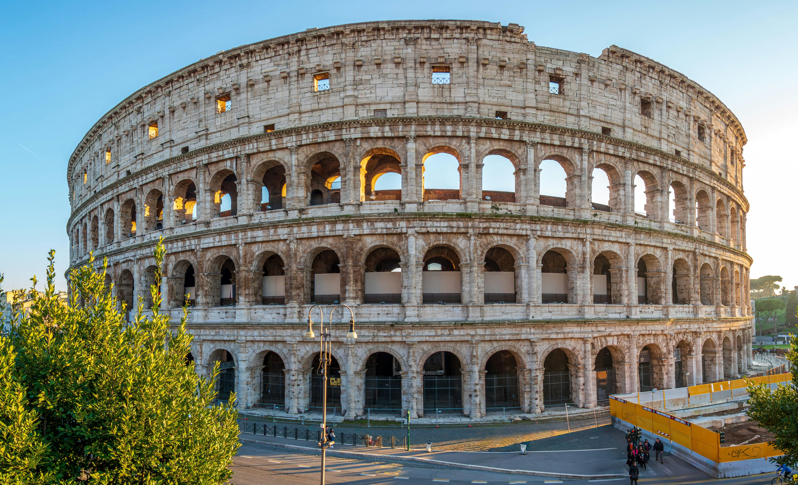

Flavian Amphitheatre

The Colosseum was originally name the Flavian Amphitheater. The name the Colosseum comes from a colossal bronze statue of Emperor Nero. It was built around 72 AD by Emperor Vespasian and finished by his son Titus in 80 AD.